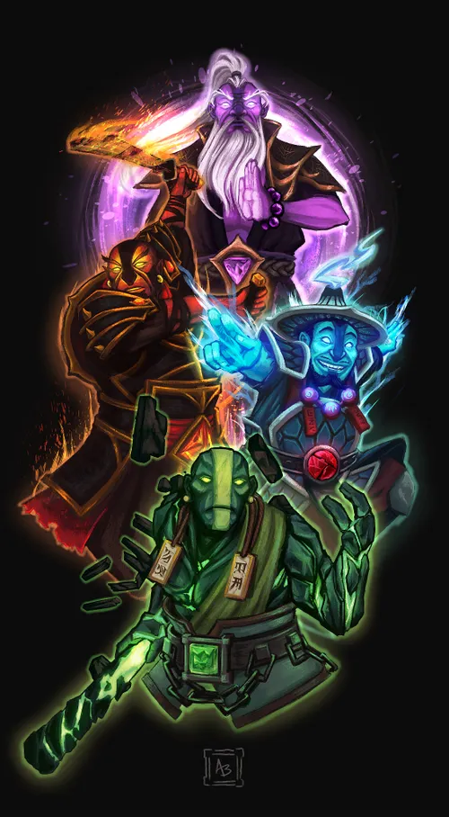
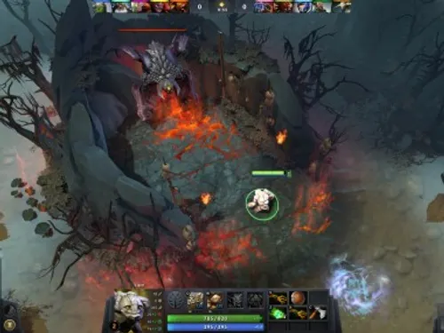
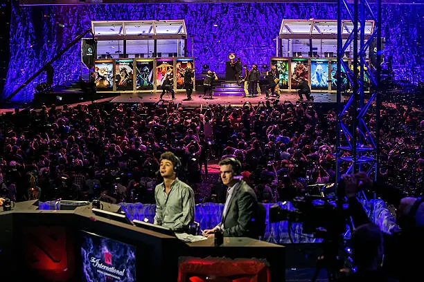

¿Que es Dota 2?
El MOBA de Valve que reune a millones de jugadores y a una de las mayores escenas de esports del mundo.
Un clasico de la estrategia
Dota 2 es un videojuego de estrategia en tiempo real (MOBA) desarrollado y publicado por Valve Corporation. Es la secuela del popular mapa personalizado "Defense of the Ancients" (DotA), creado originalmente como una modificacion del juego Warcraft III.
Aquel mapa fue mejorado durante años por la propia comunidad. Uno de sus desarrolladores, conocido como IceFrog, fue contratado mas tarde por Valve para dirigir la creacion de esta secuela, que salio oficialmente en 2013 despues de una larga etapa de pruebas.
Dota 2 es gratuito y se descarga desde la plataforma Steam. Su modelo no es "pagar para ganar": todos los heroes estan disponibles desde el inicio y las compras se limitan a objetos cosmeticos, como aspectos para los heroes, mejoras visuales y accesorios.
Con el paso del tiempo el juego recibio una renovacion visual y tecnica, y hoy cuenta con mas de cien heroes, cada uno con un estilo, una historia y un conjunto de habilidades propio. Esa variedad hace que ninguna partida sea igual a otra.

Jugabilidad
La jugabilidad de Dota 2 se basa en la coordinacion entre los jugadores y la gestion eficiente de los recursos. Cada jugador controla un personaje unico con habilidades especiales, y el objetivo es destruir la base enemiga mientras se protege la propia.
Dos equipos de cinco jugadores, los Radiant y los Dire, se enfrentan en un mapa con tres lineas principales (superior, central e inferior) y una jungla con criaturas neutrales. Cada base protege un edificio central llamado Ancestro: el primer equipo en destruir el del rival gana la partida.
Durante el juego los heroes ganan experiencia y oro al derrotar a las criaturas que avanzan por las lineas, y a los enemigos. Con ese oro compran objetos en la tienda que mejoran sus estadisticas y les dan habilidades extra. Dar el ultimo golpe a una criatura (last hit) y negar el oro al rival (deny) son tecnicas clave para tomar ventaja.
Los heroes se clasifican por su atributo principal (fuerza, agilidad, inteligencia o universal) y desempeñan roles como carry, support, iniciador o offlaner. Al llegar al nivel 6 desbloquean su habilidad definitiva, la mas poderosa. A lo largo de la partida tambien aparecen runas, el ciclo de dia y noche cambia la vision del mapa, y el jefe Roshan otorga una ventaja decisiva a quien lo derrote.
Una partida suele durar entre 30 y 60 minutos y exige comunicacion constante, buenas decisiones y trabajo en equipo.

Competencia y comunidad
Dota 2 cuenta con una de las comunidades de esports mas grandes y activas del mundo, con millones de jugadores activos y una escena competitiva profesional consolidada desde hace mas de una decada. Equipos de distintas regiones participan en ligas y torneos durante todo el año, siendo "The International" el evento mas importante, conocido por repartir algunos de los premios mas altos en la historia de los deportes electronicos.
Ademas de la escena profesional, el juego mantiene una comunidad muy activa que crea contenido, guias, modificaciones y transmisiones en vivo, contribuyendo a que Dota 2 siga siendo relevante y en constante evolucion años despues de su lanzamiento.
